Heirs’ Property in the Richmond Region
1. Introduction
What Is an Heirs’ Property?
Heirs’ property can arise when real estate passes to family members after an owner dies without a clear transfer of title. When an estate is never formally settled, ownership can splinter across descendants while the deed remains unchanged.1 Family members may legally inherit an interest in the property, a shared arrangement known as tenancy in common, without holding the clear title needed to manage it.
Without a clear title, families may struggle to sell or refinance the home, borrow against it for repairs, obtain disaster-recovery assistance, or pass it cleanly to the next generation.2 In Virginia, even someone holding a small fractional interest may seek to divide or force the sale of the property, placing the entire home at risk of purchase by real estate investors.3
Left unresolved, heirs’ property can stunt generational wealth, especially for African American and working class families, as property becomes difficult to keep, cutting families off from many of the basic benefits of homeownership and opening pathways to involuntary land loss.
2. What Is This Study?
In an effort to better understand the landscape of heirs’ properties in Virginia, this study examines parcels showing signs of tangled or unresolved title concentrated across six jurisdictions in the Richmond–Petersburg region.
The study region covered Richmond City, Henrico, Colonial Heights, Chesterfield, Hopewell, and Petersburg.
How Do We Identify an Heirs’ Property?
With over 380,000 parcels across the six study areas, identifying heirs’ property can be a challenge.
Heirs’ property is difficult to identify from public records alone. A deed may remain in the name of someone who has died, while the people who inherited the property never appear in county assessor’s data.
Combining Signals
Instead of combing through each parcel individually, this study developed a weighted screening index to identify parcels showing combinations of indicators commonly associated with heirs’ property.4
Each parcel was screened using a combination of ownership, owner-name, tenure, vacancy, mailing-address, and deceased-owner indicators.
Click an indicator for a short definition.
Ownership
County records list several people, or an estate, as owners of the same parcel. Ownership split across many people is a common result of a property passing to multiple heirs without a settled estate.
Owner name
The name recorded on the deed carries heirs language, such as “estate,” “heirs,” “et al,” or “life estate,” rather than a single living owner. This wording often appears when a property has passed to survivors without the title being formally transferred into their names.
Tenure
The deed has not changed hands for decades. A very long gap since the last recorded transfer can mean the original owner has died and the records were never updated.
Vacancy
The U.S. Postal Service marks an address as vacant when mail has gone undelivered there for an extended period. A home that sits vacant while its deed stays unchanged is a common sign of an unsettled estate.
Mailing address
The owner’s tax bill is mailed to an address different from the property itself. After an owner dies, bills often go to a relative who lives elsewhere while the property stays in the deceased owner’s name.
Deceased owner
Public records indicate that the person named on the deed has died. This is the strongest single indicator, because it means the property may never have been formally passed on to the heirs.
Those signals were then weighted and combined to distinguish parcels with stronger evidence of unresolved title from those with less conclusive patterns.
Parcels were placed into four tiers based on the strength of that evidence.
- High confidence parcels show stronger, converging evidence of unresolved title.
- Likely parcels show meaningful but less conclusive evidence.
- A smaller group of parcels showed some signals, but not enough together to sort clearly into either tier above.
- The majority of parcels fall into this tier. These properties show few or none of the ownership signals above, so there is no meaningful evidence of an unresolved estate.
These tiers are classifications built from the indicators above, not definitive determinations of heirs’ status.
The result is a regional screen identifying parcels with an elevated risk of being an heirs’ property. More details of the screening methodology are available on the Methods & Data page.
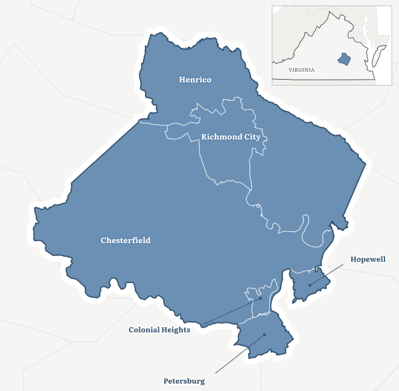
3. Map of Heirs’ Properties
Across Richmond, Petersburg, Hopewell, Colonial Heights, Chesterfield, and Henrico, the study screened 381,852 parcels for signs of an heirs’ property.
The screen identified 8,091 parcels with elevated heirs’ property risk, combining the high confidence and likely heirs tiers. That is equal to 2.12% of the regional parcel stock, or about one in every 47 parcels.
Of those properties, 1,225 were classified as high confidence, meaning several strong indicators pointed toward an unresolved estate. Another 6,866 were classified as likely, meaning the available records showed meaningful but slightly less conclusive evidence.
The interactive map beside this text shows where those parcels are. Each shaded area is a census tract, colored by the share of its parcels flagged by the heirs matrix. The map also offers overlays showing hot and cold spots, the analysis zones, and neighborhood context layers.
Rates are shown as ranges rather than exact values, and tracts with too few parcels to report reliably are marked as suppressed.
Tracts with fewer than 5 heirs-flagged parcels or fewer than 100 total parcels are not assigned a rate class. 12 of 258 tracts are suppressed. The map works best on a desktop browser. Open it full screen.
4. Key Findings
The most common flagged property is an ordinary home that appears to have remained in the same family for many years without updated assessor information.
More than four out of five flagged parcels, 81.7%, have an owner of record who has died. Nearly as many, 75.8%, have been held under the same ownership for a very long time. More than two-thirds of all flagged parcels carry both signals.
Most also have only one or two owners listed in the assessor record. This means the region’s most common heirs’ property pattern is relatively simple on paper. A deceased person remains named as an owner, the deed has not changed for decades, and the property may still be occupied by family members whose ownership interests were never formally recorded.
5. Flagged Homes vs. Regional Stock
Flagged properties also differ from the region’s housing stock as a whole.
The median flagged home was built in 1965, compared with 1981 across the full study area. Its median assessed value was $245,700, compared with $329,000 region-wide.
Vacancy is much more common among flagged parcels as well. Among properties with a known Postal Service vacancy status, 9.55% of flagged parcels were marked vacant, compared with 1.03% of all parcels.5
That difference is substantial, but it is important not to confuse heirs’ property with vacancy. Most flagged properties are not vacant. The dominant pattern remains an older, occupied home whose ownership records appear not to have kept pace with changes in the family.
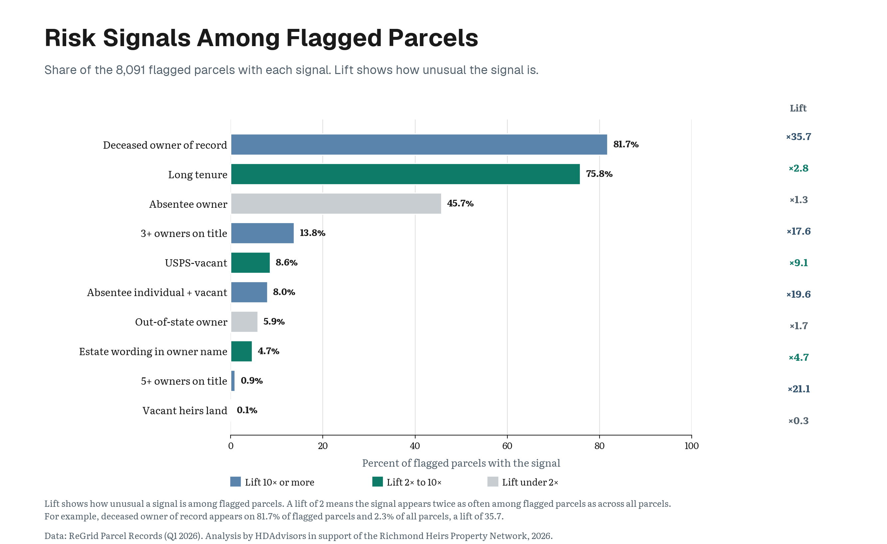
6. Heirs’ Rates Change Sharply Across the Region
The regional average hides large differences between localities.
Petersburg has the highest flagged-parcel rate, at 4.88%.
It is followed by Colonial Heights at 4.12% and Hopewell at 3.75%. Together, these three cities form the Tri-Cities area and hold the three highest rates in the study.
Richmond City’s rate is 2.46%, slightly above the regional average. Henrico is below the regional rate at 1.94%, and Chesterfield has the lowest locality rate at 1.59%.
A rate and a count answer different questions
Petersburg has the highest concentration, but larger counties can still contain more flagged parcels in total. Henrico and Chesterfield each contain more than 2,300 flagged parcels because their parcel stocks are much larger.
Each locality also has a one-page fact sheet with its housing profile and ownership signals. Click a locality to open its fact sheet in the panel beside this text. Click it again to return to the chart.
Printable copies are on the Fact Sheets page.
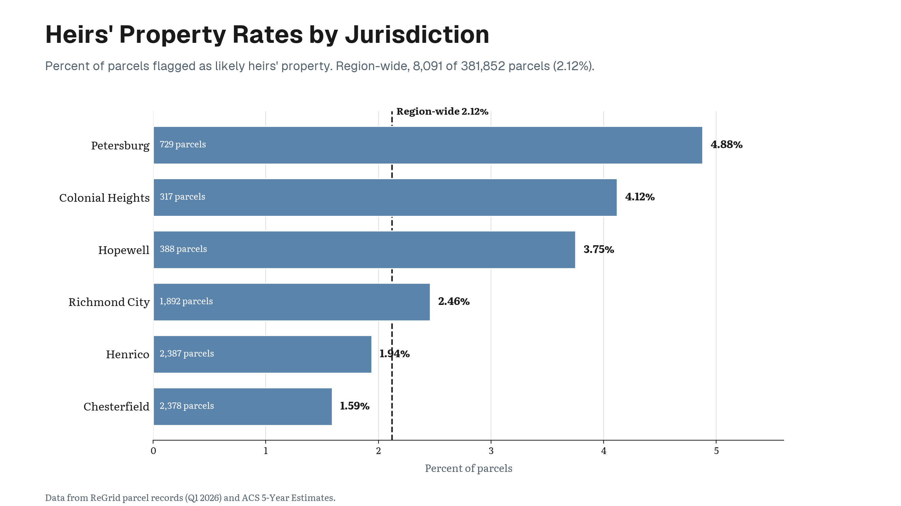
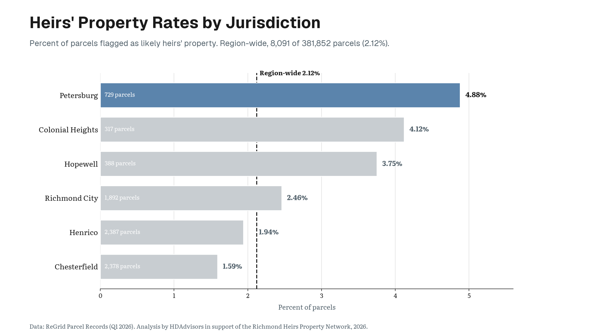
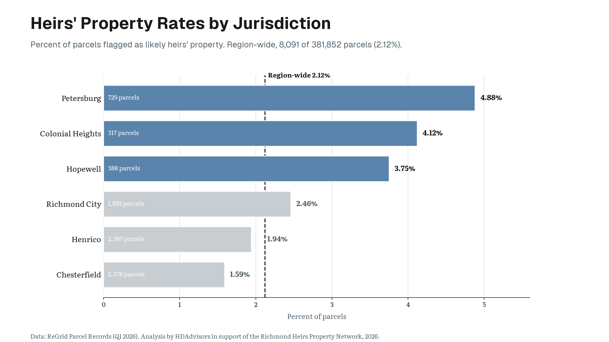
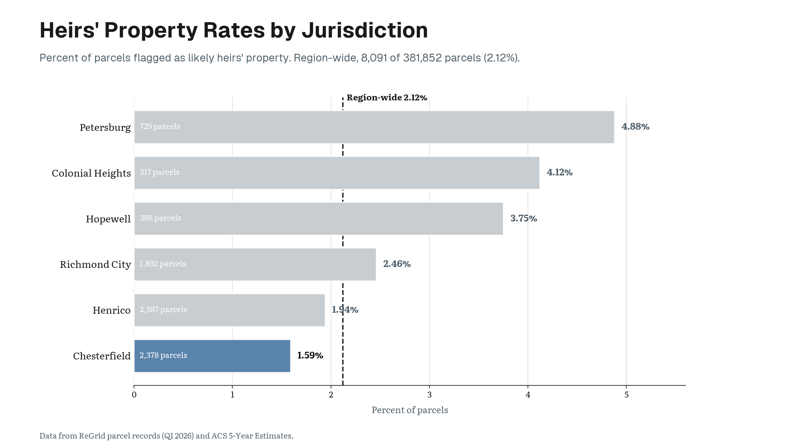
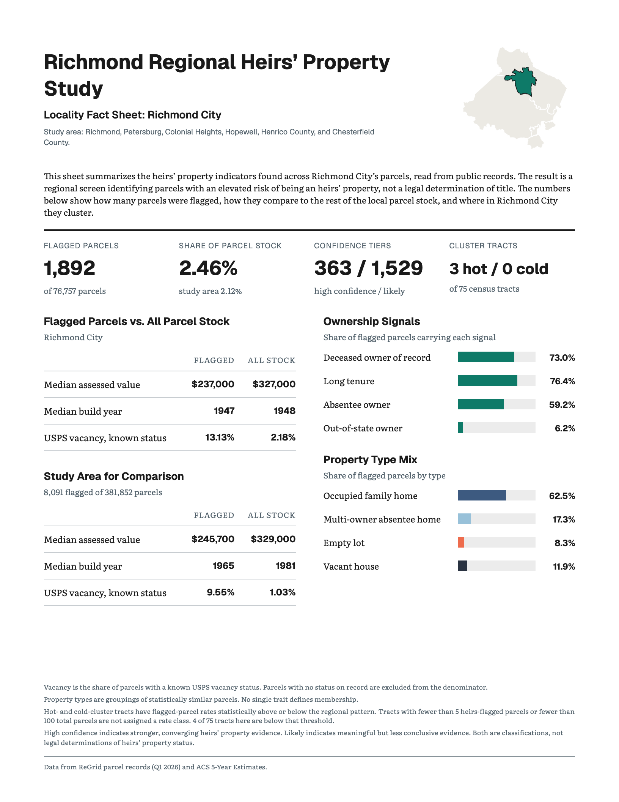
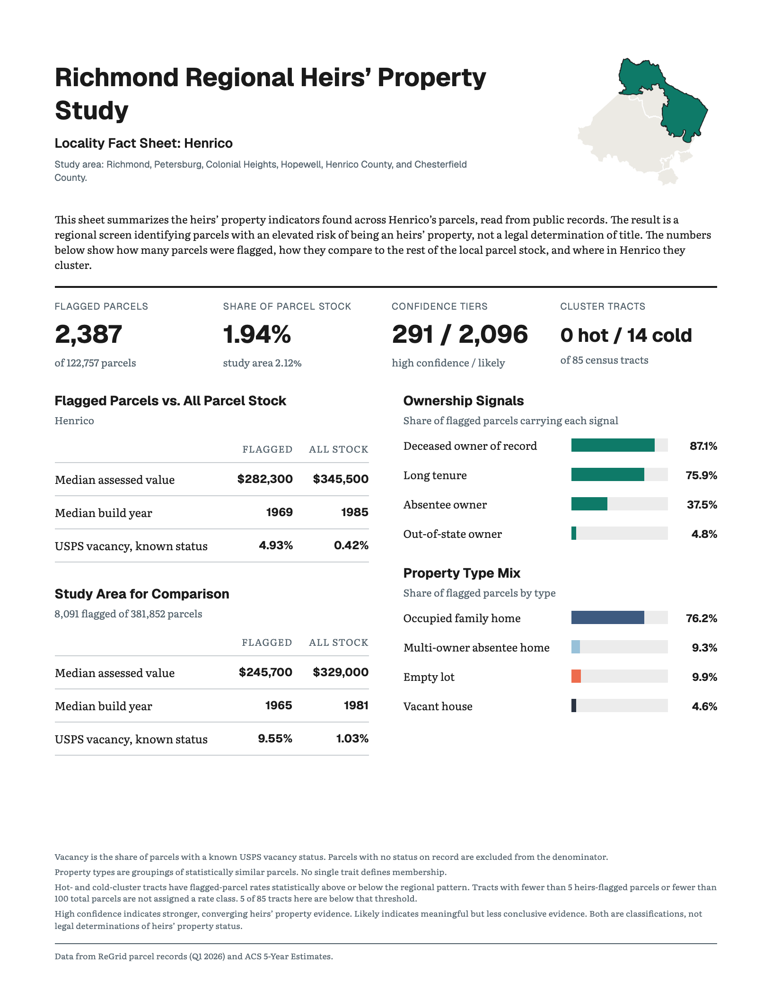
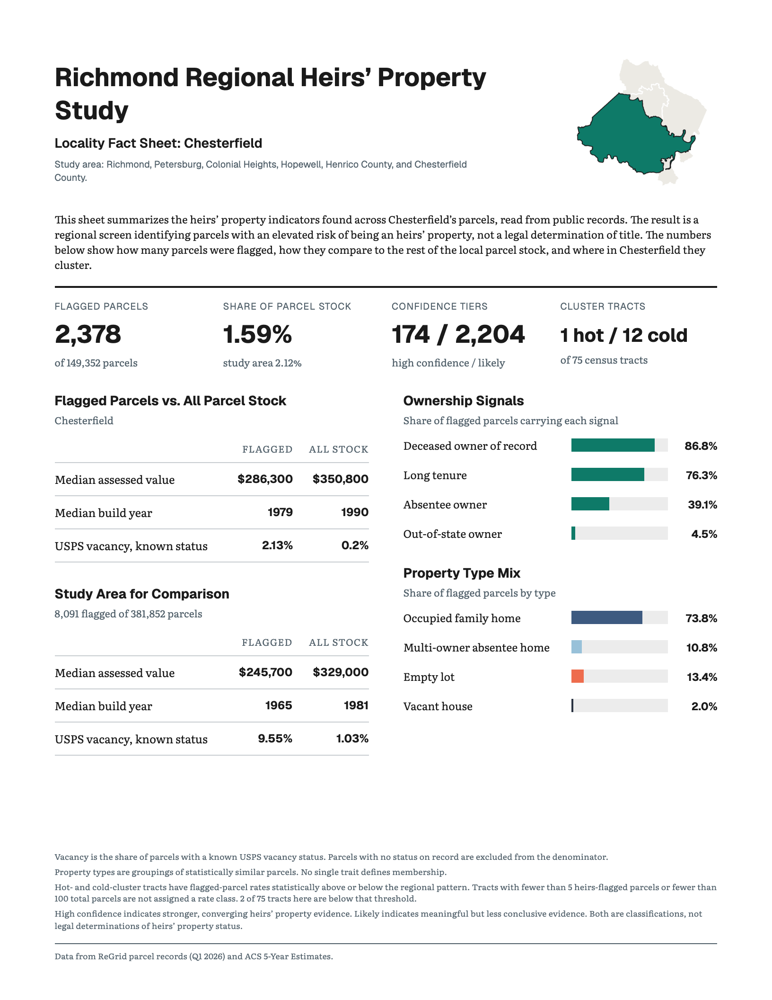
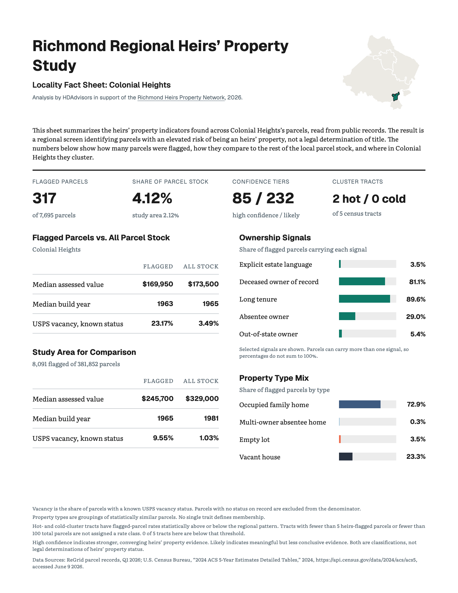
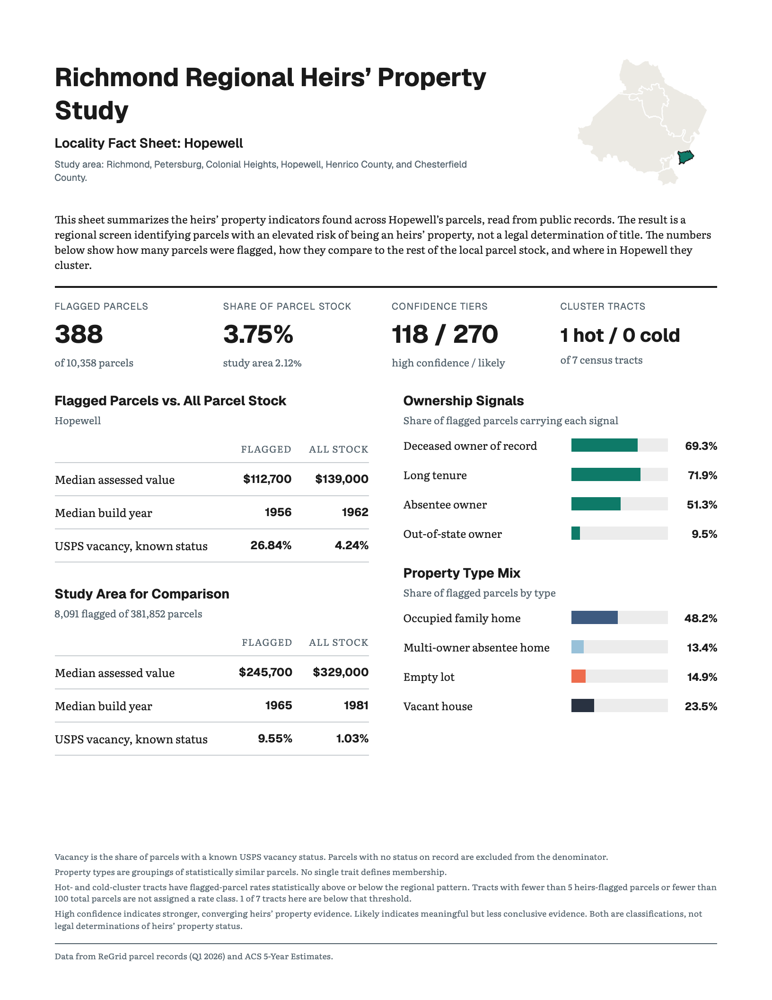
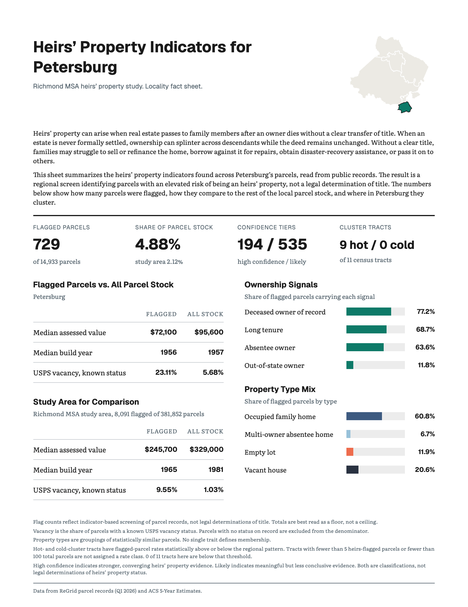
7. Patterns Cluster by Neighborhood
Heirs’ property risk is not randomly scattered across the region. High-rate neighborhoods tend to sit near other high-rate neighborhoods, while low-rate neighborhoods tend to sit near other low-rate neighborhoods.
The map divides the region into census tracts. A census tract is a small statistical area commonly used to describe neighborhood conditions. Tract boundaries do not always match the boundaries residents use when naming their neighborhoods, but they allow the same measures to be compared consistently across the region.
The study identified 16 core hot-spot tracts and 26 core cold-spot tracts. A core hot spot is not simply a tract with a high rate. It is a tract with a high rate that is also surrounded by elevated rates, with the pattern confirmed by six separate spatial tests. Cold spots are the reverse, tracts with unusually low rates surrounded by other low-rate areas.
Most hot spots form a connected concentration through Petersburg, Colonial Heights, and Hopewell, with a smaller group in eastern Richmond. Cold spots are concentrated in western Chesterfield and northwestern Henrico.
8. Clustering Across Tracts
Heirs’ properties are not scattered randomly across the region. They tend to appear near one another, often forming neighborhood- and block-level concentrations that continue across census tract boundaries.
We measured this pattern using a spatial test called Ripley’s K. This test counts how many flagged parcels are located near other flagged parcels, then compares that result with 999 random arrangements of the same number of parcels across the region’s actual parcel stock. If location did not matter, the observed pattern and random pattern would look much the same.6
Instead, at 250 meters, flagged parcels had 61% more nearby flagged parcels than the random patterns predicted. The difference remained statistically significant at every distance tested, from 250 meters to 5 kilometers.
This means heirs’ property is not only more common in some cities or census tracts than others, it is also concentrated within neighborhoods, and those concentrations do not stop at administrative lines.
![A simple diagram titled "Clustering Across Census Tracts." Two adjoining areas are shown as soft shapes on a white background, one tinted light red and one light blue, divided by a single thick black line labeled as a census tract boundary. Fictional flagged parcels appear as red dots in the left area and blue dots in the right. Most of them are gathered into one group pressed up against the boundary on both sides, with only a few scattered elsewhere. Six thin grey lines join pairs of flagged parcels that sit within 250 meters of each other on opposite sides of the line, showing that the cluster carries on across the boundary.](figures/fig7_ripley_250m.png)
9. Hot and Cold Spots
The neighborhoods at the two ends of the pattern differ sharply.
Residents of the 16 core hot-spot tracts are, on average, 66.1% non-Hispanic Black, compared with 8.2% in the 26 core cold-spot tracts.
The average poverty rate is 25.5% in hot spots and 3.9% in cold spots. Median household income is approximately $49,510 in hot spots, compared with $147,415 in cold spots. Housing is also substantially older, and owner-occupancy is lower.
One comparison is especially revealing. The share of residents age 65 or older is virtually identical, 15.0% in hot spots and 14.7% in cold spots. The geographic pattern therefore cannot be explained simply by saying that hot-spot neighborhoods contain more older residents.
These figures describe neighborhoods, not individual owners. They do not establish the race, income, or circumstances of any particular family living in a flagged property. They show that heirs’ property risk is concentrated within a broader geography of racial and economic inequality.
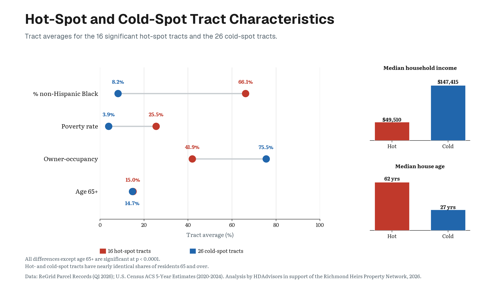
10. Poverty Plays a Role
Poverty is strongly associated with heirs’ property. Neighborhoods with higher poverty, lower incomes, and lower owner-occupancy generally have higher flagged-parcel rates.7
But poverty does not account for the full racial patterns in this region.
The analysis compared tracts while accounting for poverty, housing age, owner-occupancy, and the share of residents age 65 or older. Among otherwise similar tracts, a 10-percentage-point increase in the non-Hispanic Black population share was associated with 11.3% more flagged properties.
Additional tests accounted for the fact that neighboring tracts often resemble one another. The association remained positive after that geographic similarity was considered.8
Economic disadvantage explains an important part of the relationship. The study estimates that approximately 38% of the race and heirs’ property association operates through poverty and related economic conditions. But a substantial portion remains after those conditions are accounted for. The association with race was also stronger, not weaker, in the region’s lower-poverty tracts.
These findings show association rather than individual causation. They do not mean that the racial composition of a neighborhood causes a particular title problem. They show that unresolved title has developed within a regional housing system whose opportunities and risks have long been distributed unequally.
11. Today’s Heirs’ Properties Follow Historical Exclusion
Heirs’ properties do not appear in a vacuum.
In the 1930s, the federal Home Owners’ Loan Corporation, or HOLC, evaluated neighborhoods for mortgage-lending risk. Richmond neighborhoods received grades from A, considered the safest places for lenders, through D, labeled “hazardous.”
Black residents and other marginalized groups were routinely treated as lending risks. Neighborhoods where they lived were often assigned the lowest grade and outlined in red, or redlined. These maps helped institutionalize unequal access to mortgages, home improvement credit, and the wealth-building benefits of homeownership. The legacy of these practices is reflected in the landscape of heirs’ properties today.9
Current heirs’ property rates rise steadily across Richmond’s former grades.
- 1.25% in areas graded A
- 1.69% in areas graded B
- 2.47% in areas graded C
- 3.31% in areas graded D
The current rate in D-graded areas is more than two and a half times the rate in A-graded areas.
Petersburg’s 1937 map used racial and land-use descriptions rather than the familiar A-through-D system. The area labeled “Colored Residential” now has a flagged-parcel rate of 5.83%. The area labeled “Poor White Residential” has a rate of 4.00%, close to the 3.87% rate in the area labeled “Best Residential.”
While the old maps did not create every title problem visible today, nor did they cover the entire region, redlining provides historical context for a broader finding that present-day heirs’ property risk follows a racial geography shaped by generations of unequal access to home ownership, credit, legal assistance, and economic investment.
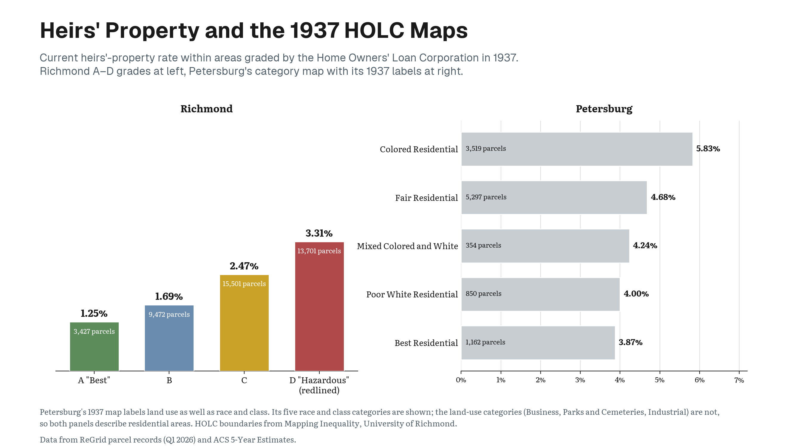
12. There Is No Single Type of Heirs’ Property
Although the study finds a clear pattern in the geography of heirs’ properties, flagged parcels do not all present the same legal or housing problem.
Using only facts recorded about each parcel, not neighborhood race, income, or poverty, the study identified four recurring property types.
Occupied family homes account for 69.4% of all flagged parcels. Every property in this group has a deceased owner of record, most have long tenure, and almost none is marked USPS-vacant. This is the region’s dominant heirs’ property profile, a home that appears to remain in family use while the deed still names someone who has died.
Multi-owner absentee homes account for 11.2%. These properties have at least three owners listed, and nearly all are owned by people whose mailing address differs from the property. They represent a different risk, namely that ownership may already be divided among several people who do not live in the home.
Empty lots account for 10.7%. These properties contain no building, but many still have a deceased owner in county records and long ownership tenure. They may represent inherited land that has remained outside a formally settled estate.
Vacant houses account for 8.6%. Nearly all are USPS-vacant and absentee-owned. These homes are the oldest and lowest-valued of the four housing profiles and are disproportionately concentrated in the region’s core hot spots.
The distinction matters for how organizations assist heirs’ properties. Each type may require a different response. A family living in a long-held home may need help probating an estate or clearing title. A property with several absentee owners may require locating and coordinating multiple heirs. A vacant house may combine a title problem with immediate repair, tax, or code enforcement concerns.10
Such distinctions also apply to whether heirs’ properties are located in rural areas versus urban ones. These distinctions also extend to place. The underlying ownership problem is the same in rural and urban areas, but the property and the risks surrounding it may differ. Rural heirs’ property may involve larger tracts of farm or undeveloped land that can potentially be divided among owners. Urban heirs’ property more often involves a house on a small lot, where physical division is impractical and a partition action may instead result in sale and displacement. In cities, tangled titles may also intersect with pressures like gentrification, short-term speculation on housing which alters how best to understand and respond to heirs’ properties.11
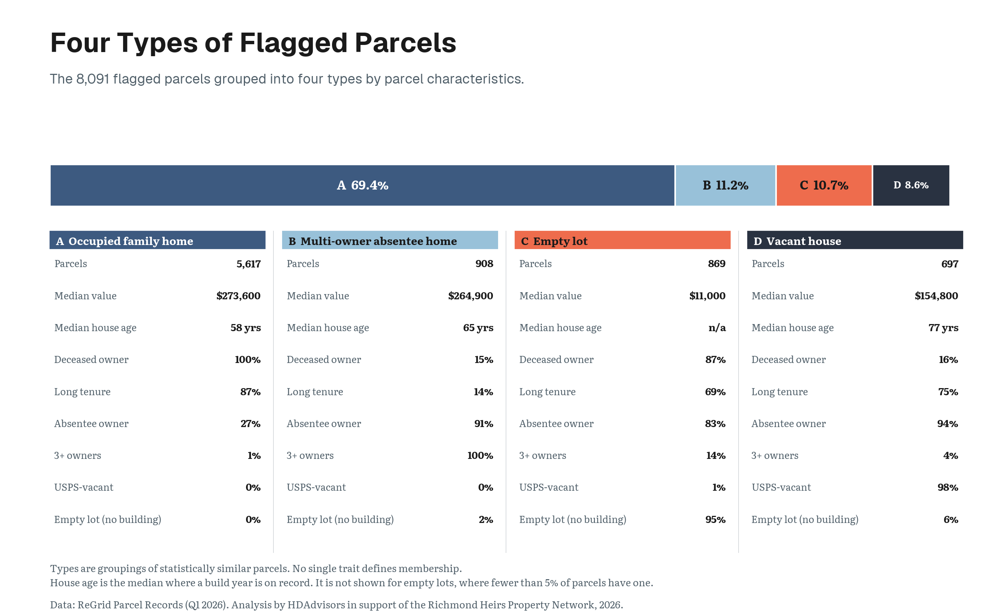
13. Different Places Require Different Approaches
The study grouped the region’s census tracts into 11 contiguous zones using SKATER, a regionalization method.12 SKATER treats the region as a network in which every tract is linked to the tracts it physically touches. It then cuts the links that join the least similar neighbors, and the groups left standing become the zones.
Because a tract can only ever be grouped with tracts it touches, each zone forms a single continuous area that can be drawn on a map, rather than a scattered collection of look-alike tracts. Each zone therefore contains neighboring tracts that are relatively similar in both their heirs’ property rates and their mixtures of the four property types.
These are analytic zones, not new neighborhoods, political districts, or service boundaries. They simplify a complex regional pattern so that outreach can respond to local conditions.
The large suburban zones are dominated by occupied family homes and generally have lower rates. The Petersburg core and the Petersburg–Colonial Heights corridor have some of the region’s highest rates. A Hopewell zone contains a larger mixture of vacant houses and empty lots. Several smaller Richmond zones stand out for multi-owner properties, bare lots, or mixed property types.
That variation is the central practical finding of the study. Heirs’ property is a regional issue, but it does not look the same everywhere. Building a network to provide effective assistance will require a common legal framework of understanding combined with outreach tailored to the properties and families found in each part of the region.
The map is therefore not intended to publicly identify individual families or declare that a particular home has tangled title. It is a guide for deciding where legal education, estate planning, title-clearing assistance, and property-stabilization resources are most likely to be needed.
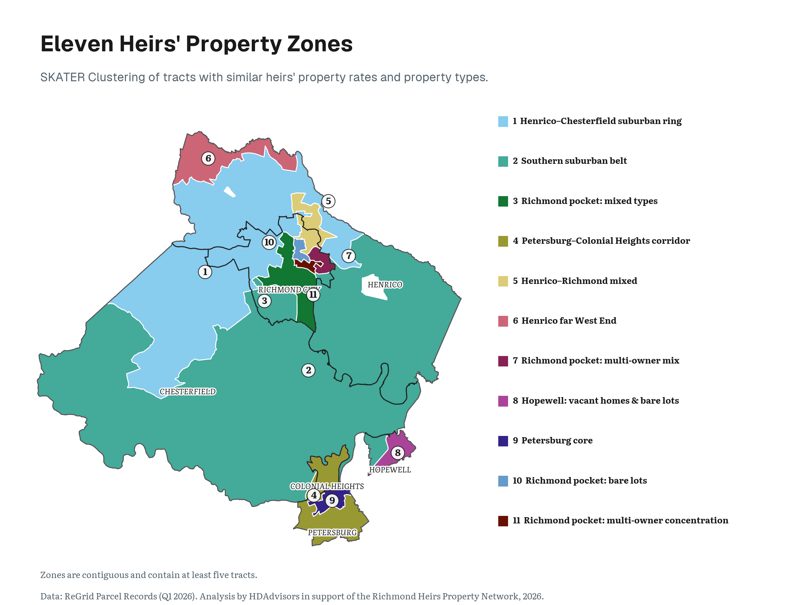
14. How We Determined an Heirs’ Property
15. About This Study
This study was commissioned by the Richmond Heirs Property Network (RHPN), with funding from the Local Initiatives Support Corporation (LISC), to give the region its first parcel-level picture of heirs’ property. RHPN connects families with free legal assistance for resolving tangled titles, including drafting wills, probating estates, and clearing ownership records. The findings here are intended to direct that outreach, and to inform policy, toward the neighborhoods where unresolved title is most concentrated.
Tracts with fewer than 5 heirs-flagged parcels or fewer than 100 total parcels are not assigned a rate class.
Footnotes
Heirs’ property is a form of tenancy in common, in which each heir holds an undivided fractional interest in the whole property rather than title to a specific part of it. G. Rebecca Dobbs and Cassandra Johnson Gaither, “How Much Heirs’ Property Is There? Using LightBox Data to Estimate Heirs’ Property Extent in the United States,” Journal of Rural Social Sciences 38, no. 1 (2023).↩︎
Cassandra Johnson Gaither and Stanley J. Zarnoch, “Unearthing ‘dead capital’: Heirs’ property prediction in two U.S. southern counties,” Land Use Policy 67 (2017): 367–377, https://doi.org/10.1016/j.landusepol.2017.05.009.↩︎
Local Initiatives Support Corporation, “Heirs’ Property,” https://www.lisc.org/our-initiatives/affordable-housing/heirs-property; and Kurt W. Smith and Ryan Thomson, “Property estimation, landowner perspectives and timber valuation of heirs property in North Carolina,” Trees, Forests and People 18 (December 2024): 100716, and the published corrigendum to that article.↩︎
Ryan Thomson and Conner Bailey, “Identifying Heirs’ Property: Extent and Value Across the South and Appalachia,” Journal of Rural Social Sciences 38, no. 1 (2023): 29–38, https://doi.org/10.34068/jrss.38.01.05. Thomson and Bailey developed a weighted four-variable index built from property-tax records to estimate the likelihood that an individual parcel is heirs’ property. The screen used here follows that summative approach and adds direct deceased-owner matching, vacancy, and confidence tiers, as described on the Methods & Data page.↩︎
Vacancy is the share of parcels with a known USPS vacancy status. Parcels with no status on record are excluded from the denominator.↩︎
Earlier heirs’ property research has likewise found geographic concentration at parcel and county scales. See Cassandra Y. Johnson Gaither, “Spatial Dimensions of Heirs’ Property in Maverick County, TX,” Southeastern Geographer 57, no. 4 (2017): 371–387; and Ayoung Kim, John Green, Cassandra Johnson-Gaither, and G. Rebecca Dobbs, “Analyzing Heirs’ Property Prevalence and Spillover Effects in the U.S. Using Spatial Econometric Analysis,” Agricultural and Resource Economics Review 54, no. 3 (2025): 596–616, https://doi.org/10.1017/age.2025.10016.↩︎
B. James Deaton, “Land ‘in Heirs’: Building a Hypothesis Concerning Tenancy in Common and the Persistence of Poverty in Central Appalachia,” Journal of Appalachian Studies 11, no. 1/2 (2005): 83–94; and B. James Deaton, “Intestate Succession and Heir Property: Implications for Future Research on the Persistence of Poverty in Central Appalachia,” Journal of Economic Issues 41, no. 4 (2007): 927–942.↩︎
A local model estimated the relationship separately across the region. The association was significantly positive in 209 of 256 tracts and negative in none.↩︎
Sarah Stein and Ann Carpenter, “Heirs’ Property in an Urban Context” (2022). Using the Jacksonville, Florida, area as a case study, Stein and Carpenter found that urban heirs’ properties tend to sit in lower-income, low-wealth, lower-educational-attainment, and racial and ethnic minority communities; that a higher Black population share was significantly associated with higher heirs’ property concentration; and that heirs’ property concentrations overlap substantially with historically redlined areas.↩︎
B. James Deaton and Jamie Baxter, “Towards a Better Understanding of the Experience of Heirs on Heirs’ Property,” in Heirs’ Property and Land Fractionation: Fostering Stable Ownership to Prevent Land Loss and Abandonment, ed. Cassandra J. Gaither, Ann Carpenter, Tracy Lloyd McCurty, and Sara Toering, Gen. Tech. Rep. SRS-244 (Asheville, NC: U.S. Department of Agriculture Forest Service, Southern Research Station, 2019), 44–48.↩︎
Codi Royall, “From Great Migration to Gentrification: Heirs Property in the Urban Context,” Northern Illinois University Law Review 45, no. 2 (2025): 246.↩︎
Renato M. Assunção, Marcos Corrêa Neves, Gilberto Câmara, and Corina da Costa Freitas, “Efficient Regionalization Techniques for Socio-Economic Geographical Units Using Minimum Spanning Trees,” International Journal of Geographical Information Science 20, no. 7 (2006): 797–811, https://doi.org/10.1080/13658810600665111. The zones were built with the SKATER implementation in spopt 0.7.0. Xin Feng et al., “spopt: A Python Package for Solving Spatial Optimization Problems in PySAL,” Journal of Open Source Software 7, no. 74 (2022): 3330, https://doi.org/10.21105/joss.03330.↩︎